<html><head><title>Microbiology</title><style>body{font-family:sans-serif;padding:20px;background:#f4f4f9}.chapter{background:white;padding:20px;margin-bottom:30px}.q{border-bottom:1px solid #ddd;padding:15px}.correct{background:#d4edda}</style></head><body><h1>Microbiology</h1><div class='chapter'><h2>Protozoology - Amoebae, Ciliates & Flagellates</h2><div class='q'><p><b>Q23:</b>                    ˆ         .                    ? 13 Answer Key Question No. Correct Option 14 Detailed Explanations   ‰--           . •                               . •    .                ? 37 Answer Key Question No. Correct Option 38 Detailed Explanations  226 ”           ‡—- -                   „           . ”           .                        ? Answer Key Question No. Correct Option 227 Detailed Explanations   ƒ  ƒ            ƒ Š    ? Answer Key 359 Question No. Correct Option Detailed Explanations               ? Answer Key Question No. Correct Option 379 Detailed Explanations                 „- ? Answer Key Question No. Correct Option 517 Detailed Explanations </p><div class='correct'>a) Œ   „ </div><div class=''>b)    ‘ </div><div class=''>c) 甊</div><div class=''>d) ”        </div><p><i> ê           .       ˆ     ˆ      ...</i></p></div></div><div class='chapter'><h2>Helminthology - Nematodes</h2><div class='q'><p><b>Q16:</b>               ?          :  Å                 …-™-…  è ?   è--      ƒ,          . …                     ° -         .                    ?                 Š  ?                 ’Å ’  ?   ‡è-  - ‚                      .                  - ƒ                . …      . 196 Answer Key Question No. Correct Option 197 Detailed Explanations          Ž           . ƒ                       . è   ,           .            -      .        ?  ‡        ‚- .               ? 289   ê™- -           -         . ‘              ,    .                 ?  Å    ,           . ƒ                 .                           . ƒ                       ? 321              ? 356     ƒ                 .          ƒ          Œ    ?  ê              ?   ’- -         ,   ,   . è Å ,       .      .         ? 421  †          :  çŒ--                    . ‡   ê-             .                 .           ˆ     ?    -             ,  ,   ,     . ˆ      -  .               ?                  ?      ‰                   ‚   .           ˆ    ? 561      ‹      “ …    -  . ‡ è  ,      ,           .     è         .           ? 583 </p><br><br><br><br><br><br><br><div class=''>a)   </div><div class='correct'>b) ‹   </div><div class=''>c) ê </div><div class=''>d) ‡    </div><p><i> ê   ''         ,            š   . ê    ...</i></p></div><div class='q'><p><b>Q17:</b>                       .                  ? 11           ‘            .       ‘                          ,            ,           35          .         ?  Å          -     ?  š         _______. 101  133 …           .                è Ž                .                             ?               è  :         Å              †                 .                ?           Š    ? Answer Key Question No. Correct Option 290 Detailed Explanations                  '   ?               ,     ,     ç .                      ç. ƒ         ?   ˜--      Š   ,          .       ƒ        ?                Œ   ? 377                  ? Answer Key Question No. Correct Option 405 Detailed Explanations                 ? 422       ‡   ? 437 Answer Key Question No. Correct Option Detailed Explanations  “--          „            „,           ˆ     .                   .           ˆ   „    ? 454  493 ê                  .         ,                   ” .              ” ? Answer Key Question No. Correct Option Detailed Explanations                  ?   ‡Ž--         ‚  †        ˆ  .            .      ˆ   ‚    ? Answer Key Question No. Correct Option 562 Detailed Explanations      Œ       ‡Åˆ  .               .                 ? </p><br><br><br><br><br><br><div class=''>a) ˆŠ            </div><div class='correct'>b)            </div><div class=''>c) “    •   </div><div class=''>d) ‰              </div><p><i> ê                 .         ‰      ...</i></p></div><div class='q'><p><b>Q18:</b>            †               ___________.     è     ‘       '  “  è   . Å             ? 59                           ?            ,           .                     ,                  -           .                   ? 134                        .                            .                ? 152   †–- -             . •           . ˆ                           ? 224            ”‰     … ‰   ,  ,             .    †                .         ? 268   ê˜- -              ,   ,  -             -     . ‡-               . •          .                      ?       ™   ,         ,    ,   ˜   . ˆ      • ‹Š             . ƒ                       ? 322          ƒ      ?   ƒ                      .          ƒ         ?   •- -     ,    ,       . è Å ,     .              ?  ç”--         -  „    ˆ       . ‡        „  • .   ê-– „             .          Š“°  ˆ-  ,   (“-‰” µ),          -  .           ? 455                  ? 513   ” --               . „                           .                 ? 584 </p><br><br><br><br><br><br><div class=''>a)    </div><div class=''>b) </div><div class='correct'>c) </div><div class=''>d) ˆ  </div><p><i>               . ê           “      Å      ...</i></p></div><div class='q'><p><b>Q19:</b>                         ? 12                 .     '            -     .           ? 36      '            . Ž  è          _____  ”     „  ,                .                       ?                        -ˆ?                  ƒ?                         . ƒ                     . ƒ         †…  .                   '    ?                      †   .               ?  ‰  ’               ? 305   ‰–- -         ,  ,  ˜   ,      ‰Ž  . ƒ               ?  357              .    ƒ          ƒ     ?   ‰Š--           ,    , ‡   ,        . •          .                  ?   ‰ç- -         , “   ,     . Š  (     )       '  .                 ? 423 Answer Key Question No. Correct Option 424 Detailed Explanations   -                ,     „  . Å   —,                                   .          ˆ   ?  ‹                         Å „         .        „   ? 514    -            ,  ,          .                          • ‘ .         ? 585 </p>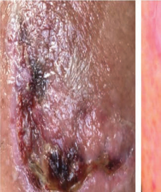<br><br><br><br><br><br><br><br><br><br><br><div class='correct'>a) ê</div><div class=''>b) …    </div><div class=''>c)         </div><div class=''>d) ‡   </div><p><i> ê                  (‚‰—)            Å. ‚‰...</i></p></div><div class='q'><p><b>Q20:</b>                   ˆ   —ê-‚‰—  ?                 .            .          ?                          . Ž         Ž  ,          . Å             ? 60 Answer Key Question No. Correct Option Detailed Explanations                   ƒ  ? Answer Key 102 Question No. Correct Option Detailed Explanations                 135 Answer Key Question No. Correct Option Detailed Explanations             è Ž          . ‚                        .          ?            ,     ,    .                   ’Š     .                  .                    ? 225           ? 269                     ? Answer Key Question No. Correct Option 306 Detailed Explanations   ‰†- -          ê    ,    ,  ˜   ,  ,    . ‹          . ƒ           ? Answer Key Question No. Correct Option 323 Detailed Explanations       ƒƒ,   ‰    ƒ ‡ê       ƒ   .      ƒ          ?             ?     „           .      ˆ      „    456 Answer Key Question No. Correct Option 457 Detailed Explanations                     ?                ? </p><br><br><div class='correct'>a)         </div><div class=''>b) ê</div><div class=''>c) ‡ </div><div class=''>d)     </div><p><i> ê  ˆ    —ê-‚‰—        (—ê)    —- Å      ....</i></p></div><div class='q'><p><b>Q21:</b>           ?                  ?             ‚? Answer Key 153 Question No. Correct Option Detailed Explanations  ˆ      &;        .                   „    .               ? Answer Key Question No. Correct Option 270 Detailed Explanations  Ž    ‡ê   Š    ƒ  ƒ    ƒ   ? 358                           .         Œ      Œ? 378   ’‚--     –     †–         . ”          .        ? 515              ? </p><br><div class=''>a) –     </div><div class=''>b)        </div><div class='correct'>c) ˆ     </div><div class=''>d) Š       </div><p><i> ™           . ê                  ...</i></p></div><div class='q'><p><b>Q22:</b>                  ˆ ?  ˆ         ,             ?              ?   çê-          ƒ   Š   .  ƒ  ƒ              ?  ˆ   …‹,             ƒ   ç  ,   ƒ  ‡   . „                        .              ?                      .              .      „     ? 516  “          : Answer Key Question No. Correct Option 586 Detailed Explanations </p><br><br><br><div class='correct'>a) -‘, ‹- , Š- , ˆ-</div><div class=''>b) - , ‹- ,Š- ,ˆ-‘</div><div class=''>c) - , ‹- , Š-‘, ˆ-</div><div class=''>d) - , ‹-‘, Š- , ˆ-</div><p><i> ù                      '  . ê   ...</i></p></div></div><div class='chapter'><h2>Applied Microbiology</h2><div class='q'><p><b>Q1:</b>             .                     ?                ?                               ?   --                     .                    .                ?           β-  -     ?        .      ,          .           -         .                 -  .      .       --                    ,             .                     .                         ?             ?                   .         .            -   ?                      .         ,             .          ?           ,     ,    .                     .            ?        ,    .            .           ?                   .              .                .   ,          &;  /Å. ‚    ƒ      '     ?                  .  -       .            .          .       ?                  .                ?                      ?                 ?     .                      ?   --            .        ?           -        ?                 ?                           ?              ?             .   ,             ,          .              ?                   ?              ?   --                     .     ________.                 :   --                    .     ,   ,        .                   .       ?                ?           ?             ,                .  ,        .       ? </p><br><br><br><br><br><br><br><br><br><br><br><br><br><br><br><br><br><br>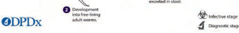<br><div class=''>a)      </div><div class='correct'>b)    </div><div class=''>c)     </div><div class=''>d)         </div><p><i> ê          ,             . ê             ...</i></p></div><div class='q'><p><b>Q2:</b>   - -                .    ,          .                            ? 4   --                           .                            .               ?          - -                     .              .    ,      .       . Å                    ?          -     ?   - -             .                   . Å               (   )          . ‚      ƒ-      .                ?                           .                              .                  .                     ? 96                                   .            .                -         .                ? 115               .                ,          .        .          '  ? 128                                    .                                 .               ? 147                   ?            , ,  ,           -   .          ?  Å                        ‚   . Å                  ƒ . „ ‚          ‚   . …      . 190                     ?                ,          .           ? 218  ‚             ?           ,  ,       . Å    ‚     .        .            ? 249             ?   --         -   ,              .     -     .               ?   - -           ,   ,         .               .                   ?   - -                   .     ,            .              .       . 316               -    ?              :   --                            .    ,            Å         .  ‚   ,        ƒ ƒ                   .           ƒ    ?               ?                ,       .        ?   - -                       ,   ,                     .         .              ?                 .              ? 432           ?                  ?                                 ?   --             .                     ?        ,             .               .         ,           .             ? 535   --                            .        .                  .             ?                .                         .               . Å             ? </p><div class=''>a) ‚ </div><div class='correct'>b)   </div><div class=''>c)   </div><div class=''>d) ‚   </div><p><i> 15                              ...</i></p></div><div class='q'><p><b>Q3:</b>             ?                            .          ?  „       ƒ              .                       -    ?          †                     .            ?   --          Å‚      ƒ,  ,        .                   .                „           ?          -       ?                   ‚     ?                     ?  164              Å         .                          ?                   .       .      -  ‚   ‚          -          (Å…)  ‚  ?   ‚- -              .                     .               ?                     Å     ?           …‡            . ˆ         . …                      ?          -  .    ?           .                ?  284                  ?                  ?  ƒ              ?                   ?  351  --    ‚     ƒ        ‚  ,          ƒ    ,                    .  „…             ƒ Å ’      .        ?   …†--       , ,   ‡ .                .                     ?                 ?                  ?              ƒ    ?       „           ?            ?         Å         ?   Å‚--                 ƒ         . „               .                     ?  505  Å‚--                   ƒ       - „   …       „.           . † …  ,                      .          „      ?           .         ?  553           ,      ƒ    …Å       ‚   .            ?  575  --           ,  ,        .           .             ?               ƒ   ? </p><br><br><br><br><br><br><br><br><br><br><div class=''>a)         </div><div class=''>b)   </div><div class=''>c) „…  </div><div class='correct'>d)    </div><p><i> †‡            ,   Œ†‡            . †‡      Ž†‡ ...</i></p></div><div class='q'><p><b>Q4:</b>                 ˆ       ? 5               ? 30  Å                - ? 55  „   ,      ,          ,      ,  ,   ,             .        ? 70  83  - -           .      †           . ‡              .              ?                ?      … … -   ? 116                  ,                        .             .                    ?    -               ,                    . Å    ,        -              . ‚             .       ƒ           ?                    .         -          „ …           ?   --              . Å   ,    .     .       ? 178              ‚       .       .           ? 191            -  ? 207                -      ? 219  238      ‰‰   …         _________.           ˆ   ‚    ‰ „  _______. 250  ‚ƒ--                 „  . … †   ,            . Å          262            .                         ?   ‚--       ƒ      „                     .                     „ ?                           .                      ? 299   †- -         ‡…ˆ      ‰-       -.  Å-Š        . ƒ                       ? 317                ? 336            †‡ˆ   ƒ     .   ƒ . Å     ƒ     ‰ Š  .       ?  373              ?               …      ? 390                     ? 399         †- -         ƒ    .                 ? 416                 ? 433                       ? 447    †‡             Å    .  ˆ-    Å      .       ‰   Å       Å .       ÅÅ   ? 473                 ? 489  ‹                           . †   ,            .         …         ?           .       Å‚ƒ ?   ‡--        …        ,     ,           ˆ.  ‰  ‚            .               ‚    ? 554   ƒ--                     .                   .           ? 576  Å     : 602 </p><br><br><br><br><br><div class='correct'>a)       </div><div class=''>b)       </div><div class=''>c) †   </div><div class=''>d)      </div><p><i> ê                     . 16 ê       ...</i></p></div><div class='q'><p><b>Q5:</b>                            ?   ‰--     , ,     .        .   -                ?  ‰                  _______            ,              .              ?   Š- -        ‹‡               ,  ,   . ‚        ■       . ‹ Œ    ,    Œ         .         ?                         ? 97        …               … ?                   ? 129     ƒ             „  '  ?                 . ‚                .                       ?   …--       †           †       Ňˆ        .               ?  …       ‚                .   ƒ           „           .           …        ?                 „‡-                -     .               ?        ,            ‚ '   . ‚          ?   Š- -            . ƒ          ,  ,            .  -            .           ?  ‚ˆ--      ,    ,        .         .              ?          ň          . ‰ Š  ,              &; Š ,          .                ? 285   Š‹- -    Œ         ,      ç  .        ‹                   .       .                 ?        ,     †      . Œ ,      ç          . ƒ        ‡…ˆ          ?      ƒ„ …     †  (‡‡).  ‡‡               Å   /   ,    ˆ -    .                       ?            „ ˆ      ƒ       .      Š     ƒ   ƒ    ? 352                  ?      „             ,                    ?  ‡               ,   ,  ,    . ‡       .            ?          , ,        Ž  . è Å ,        . ‹             .      Š    ?   ˆ‰- -        ƒ.     ,           . Š   ,   ,  ,  ,   .         ?             Å‚ƒ           „     …   . †Å‡       ˆ   ,     „           .           ?   -               .   Å    Å         Åç      . Ž  ‰            .           Å      Å .     . 474                ?                            .             …        ? 506                          .              ? 536                  ?                      ,   ■            ? 577              ? </p>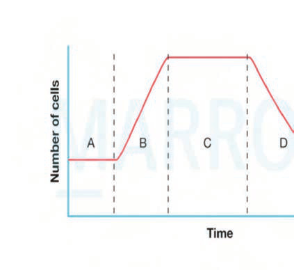<br><br><br><br><br><br><br><br><br><br><br><br><br><br><br><br><br><br><br><br>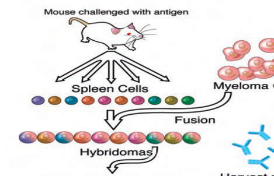<br>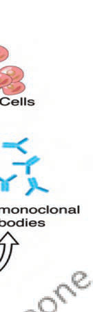<br><br><div class=''>a) ‚   -            .</div><div class='correct'>b)           ‡Å  .</div><div class=''>c) ‡ ,       ,       .</div><div class=''>d) ˆ „Å                  .</div><p><i> ‡                    ,       ‰    . ê    ...</i></p></div><div class='q'><p><b>Q6:</b>               ? 6                       ? 31  Å          -        ?  „              . „    ,  --        ,  †   .           ?                     „-   ‚-    ? 84                      ƒ    ?           …   ?                        ?                             …   . ‚                   .           -          .                  ? 148           Œ         ‡    .               ? 165                                 ? 179  „        ‚     . „           -‚       -‰     ‚ .        ? 192             ?   „…- -                       ‰  .   '          .                      . ˆ   .    -          . Š  ,                              . ‚                 ?  ‡      -                   „  -  :  Š‹--           , Œ           .           „  .           ?  ‡        Š                   .          ?          ? 300  ƒ                        ?  ƒ                   ?  Œ ’    ƒ ƒ      . †   ,            ,  Š Š ‘       Š ’.      ƒ          ƒ  .  ƒ          ?                 ?   ‚ˆ- -   ‡     ‰         .                ?   Œ- -       ,  ,  ,                 . ç      '  .                    ? 400   Ž’- -                   ,    ,   . è Å ,        “    .           ”Š         Š .                ? 417   ‹Œ- -       ,          . †      .               ?             ?             ________  Š    :   --                ,       . Ž                      „. † …  , è  '    .                ˆŠê            .           „     ?   ‡--         -  ,  ,       ˆ  .        .                                ?                  ‚ - ˆ     ‚? 555           ‡Åˆ       . „                 . ‰   ,                    . Š‹Š                      .       ?                          ? 603 </p><br><br><br><br><br><div class=''>a) ‰ –Š   </div><div class=''>b) ‚   </div><div class='correct'>c)    </div><div class=''>d) Å     </div><p><i> ê                               - ...</i></p></div><div class='q'><p><b>Q7:</b>                 ?   ‰ç--         Žè°ê,    ,    ,          .    ,      ‘         .               ‘          ?   Œ‘- -     è        è    . Ž  ‘        Ž  ’/“  Œ/“     .              ?  „ ‡--                        .    ,            †  .             ? 71   ç- -            ,         . ‡               .           ˆ      .                 ?               ?                              Å  . ‡                            .                ?                         ‚     ?                 †  ?             ‡        &;ê  ?           ?   ‰è-  -      ‚   , ‚ ,     ,  ‚  ,     .                           .    ‚          ?   ‹Œ- -           ,   ,             .     ,                                   .        ? 208  220            ?  ‚      „       ? 239     -                   †‡Œ  -         ç  .       251              ?            ,        .       ? 263                ?   ê‹- -                     .                ,           . Å è  ,               .                    ?   ŽŽ-           ‘…           ,      ,     .           -                . ˆ  ’             ˆ              . ƒ                 ?  ‹-ˆ -   ƒŒ            .                  ˆ        ? 337        Žç è,        ‰-‰     ƒ  ƒ   ƒ  ƒ.        . Å     .     ƒ    ƒ        ? 353   ‰--                  .                  ?           ç   „    ?   ˆ‹- -        Žè              ‹  .      ,   ,           ˆ  . Ž ƒ  ,       . ê '   .        ?     -     ,   , “  ,        . „                •   . è   ,    –        –  .                  .              ?   ŽŠ- -       è ê  ‘èÅ-ˆ’.                  ? 434  448 ‰Š-- -                            , ˆ, ,           .          .                „   ?  „- -  †‡  ■                   Å . Ž   , Å        .    ç  ? 475               Š          ,   ,                   .               ? 490             ,      ,                .                    .           ? 507   †--    -                      . ‹          .                    ? 537    ‰            ,                . †     ‚   . Š       ,         „Å… .             ?         ‹   ,             ? 578  ‹                     ? </p><br><br><br><br><br><br><br><br>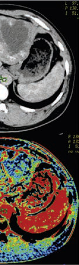<br>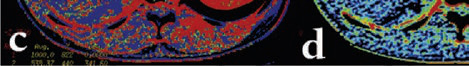<br><div class=''>a) ‡     </div><div class='correct'>b) ‰ -Š   </div><div class=''>c) Š     </div><div class=''>d) „  </div><p><i> ƒ          . ƒ ,   ,    -         ...</i></p></div><div class='q'><p><b>Q8:</b>  ‚  ˆ      ______.                  ?  Å              „Ž…   ? 56                 †       ?   “- -        . ‚                   ç   .                     ? 85   ‰Š--         ‹ .                 ?  „                     ? 117   † ’           ?      ƒ            -                     .                    ?                    ?          è '  ? 180        ‚               ? 193                  ,                      .               ?                              ?       „ –Œ    ,  ,         '    '  '   '.        ______.              ‹ ?     ê, ê              .        †     .             ? 264   çè--     -     . ‡                            .             ?                                 .          .     -“ è    Ň Œ       .    ? 301  ’                   ç   -„ †.“   ” •. ƒ    -                ' 318      ?        -     ç'-Ž'         .          †ˆ            ?   ƒ  ƒ            ƒ            ƒ   ƒ      ?  374            ,            .       ƒ            ?                              - „    . -       „,  „  ç        „. è ‡                  .    391            ‡      ?   ‘- -         Žè   .          ? 401           —ê  ? 418                 ( ‘èÅ- ˆ’)       __________.  Œç--                        Œ           .             ? 449         :                   ?                         ?   …ç--        -  ,   ,       . ‹          ç    .               .          ?   ‡ --        ç„        ‚         Ž   .    è-        ‚             .                      ‚   .         ‚   ? 556            .                                     ? </p><br><br><br><br><br><br><br><br><br><br><br><br>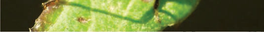<br><br><br><br>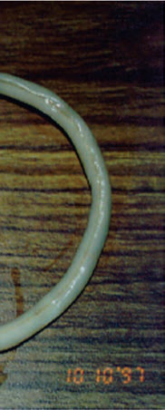<br>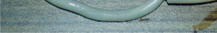<br><div class='correct'>a) ‰ –Š   </div><div class=''>b) Å     </div><div class=''>c) ‡     </div><div class=''>d)    </div><p><i> ‚  ˆ      Žç   ‰   ç†   . ‚  ˆ            ...</i></p></div><div class='q'><p><b>Q9:</b>             ˆ        膆 °‰  †    ç    ?                 ? 32  –                  „Ž…     .        è    .                … ? 72                              . ‚      ç‘,‘‘‘/  .               ?            -     ,       ,   ƒ Å ? 98  ƒ               ?                  ? 130   ‰Š- -               ‹    .       †      Œ    .        ç        ?  ‡            ___________.  ê                  .            ?               .  ‡çê:‘ê     . ?            ‹           .               ? 209          Ž         . è   ,   ,                  .          ˆ      -       .            .                  è        ? 221   Ž--                ,   . ‚        ‰        '   ?   è- -       ,         . † „  ,           .                  Å-        .      ? 252                .               . '           .          '    ?  286  ‚-                      .              .                 Š?            -         .                      . ”      .                    ?          ‰          ‡…ˆ              . ƒ         ?                  ˆ        è   ê  ‘’‘“.      ? 338    ƒ                    ƒ  Š . †   ,    , “ ,     ,    .                  .    ƒ   -   ƒ      .        ? 354            è    -.          ƒ       ?   çŒ- -               „   „     - „.  „            -   .                     ?       ‰- -                  . ç       ,  ,      Š  . Ž ƒ  ,      ƒ    .                   ?                 ,  ,  ,                      .                  ?  è        ƒƒ- ‘,  „”êÅ   .               ?                           ˆ ?                   . 476                     .                   ? 491   “--  Ž”•-               .        ■           .    „  ? 508  Š -„                     ?              ‚      ? 557   ç- -                    .   Ž-       -   .  è         .                   ? 579  ‡                            Œ .       „          „    .       „    ? </p>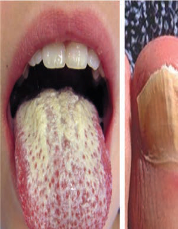<br><br><br><br>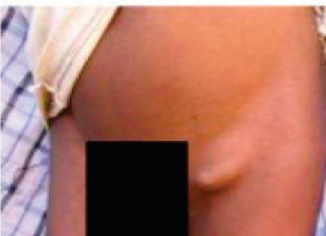<br><br><br><br><br><br><br><br><div class=''>a)  ƒ „</div><div class=''>b) ç  „</div><div class=''>c) „   „</div><div class='correct'>d) „  „</div><p><i> ê      ˆ          膆°‰  †    ç      ˆ...</i></p></div><div class='q'><p><b>Q10:</b>                 ? 7                    ?              Ž†     …‚’+   ”• /µ. Å             ?                        ç  ,           .                    ?                     ? 86        Å‚     ƒ    ƒ  .             , -ƒ       ƒ „      β-        .                   ƒ  ?        -                   .                       ?   ê--        ,   ,   ,         .                       ?  149                        .    -    ,                    ?     … (…   )       ‚ç +      ‰+    ‰†/µ….                     ? 166                              .                         ?      .           .     ,          ,                 ‹  .                ?                      ?  ‚              ‰?  ƒ        :              -Ž    “  .                    .       †     ? 265                      ?                        . Å è  ,                    è . ƒ         .           ?   †-  -                      .  —-  (    )            . ƒ                   ? 319   ˆ             ,     ˆ       ç ˆ.      ˆ         “’ ˆ  . ‚  ˆ         ŠŒƒ-“”.    ˆ ˆ      ?           Åê.  ‘  ‰  %       ˆ       . ‘     ƒ               _________   çÅ- -            …     .      ‡       ‚ ‹  .                  ê‘     ?          ,  ,                       . –               .          ?               -  .                      ?                   è?                          ? 450          ,     Å   Å ç   .        . Ž   ,            ç          Å    .   Å   ç     ,      ‰        .       ÅÅ    ? 477  ê                           ƒ    .                   ?                    .              ? 509                   ? 538   ŽŒ--                      . ç ‰  ,          ,  ˆ   ‰       … '     ‚.          ˆ        ?             ?                ? 604 </p><br><br><br><br><br><br>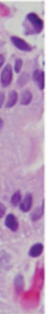<br>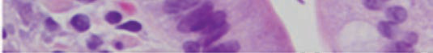<br><br><br><br><br>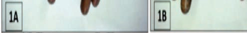<br><br><div class=''>a) Ž‹‚‡</div><div class=''>b) „ </div><div class=''>c) ‹  </div><div class='correct'>d)     Å</div><p><i> ‹          . ‹        ,            ....</i></p></div><div class='q'><p><b>Q11:</b>                    ?   --                           .                   ?  Å                  è       ?  „ çç--            .                     .         ?              ? Answer Key Question No. Correct Option Detailed Explanations                       ,    ,                  ƒ?   Å‹-  -          ,              . Œ            .                  ? 118                     ?   ‰Š- -                     …         . è ƒ  ,     ê      ƒ.        .         ?    -                   ê  . ‚       . ‡        ,        . ˆ-  ‡    .         ?  ê              . ‚                          ? 181           ?  ’                 ƒ        „ .                  ?   Ž                   .                    ?   è--  ç       . ‚                               ? 240            ?                  ?          Š       Š  ç               '   '     .                ? 287    ,              --       -   .   -       è                   .                  ? 302  ƒ             ?                 ˆ ˆ    ? 339     '         ?  ‘                  ? 375  è                         -  ‹    .                  ? 392 Answer Key Question No. Correct Option Detailed Explanations  402  Š- -            ,  ,    . Ž ƒ     ,       .             ?   ’- -         èê         -          .                        ? 419  435             , ˆ         .         ,          .         ?      -‡            „         .      ˆ       .                  . Ž      .               ?   ‘            .           ?           …                        .           …       ?   ‹Žè            êÅ           -    . ƒêƒ              .                    .                 ?                  ‘ ‚? 558    -      ‡Åˆ           ‘  .           .           .          ? 580                     ? </p><br><br><br><br><br><br><div class='correct'>a)       </div><div class=''>b) ˆ ç   </div><div class=''>c) Ž     </div><div class=''>d)    ƒ </div><p><i> ê                    . ‹        ...</i></p></div><div class='q'><p><b>Q12:</b>                             ? 8  ˆ        ■    . 33  Å      è                ? 57  „ ‰Š--         ,  ,    ,   .  …   ,          .  ‹   , 73          -     .                  ?            ƒƒ   Žè°,  Åê‘ ƒ,        Ž.’% “ ? 99   çŽ-  -            Å          .                 ?   ‘ê--                          .               ? 131                         ?  •          –- -  '     . Å            .                   ? 167                  .                 ? Answer Key Question No. Correct Option Detailed Explanations           ? 194        ‘“         „ . ç                    .         ?  ”                   †‰      -          . ”                    .             ?  ‚            ?   ç- -      ’  ,   ,         . ƒ  '       ‘ .                ? Answer Key Question No. Correct Option 253 Detailed Explanations  ƒ‚--       … ‰     ,   ,   ,      .          .                . ”           .                ê- ?            „ƒ–        . ‚       ;    ’   ƒ ’   .               ?  ƒ                       ?                     ˆ ˆ?     ‡ -       ?              .       ƒ           ,     ,         ?                     ?   ç- -  –             Š      ,     ,    ,   Ž  .                    .                  ?        —      ,          …   .        ?   „      „              ˆ  ˆ  .       ˆ    „   .    ˆ     ? 451  β ‚-          ‰?            „…     . ê           „ -ç    .            ?            †–        -              .           .                     ? 510   ‘  -     (… µ )     ‹Žè          .          ? 539   ‡ --           ç„      ‚,       ,      .  ‚           ˆ  ˆ. ’         .          ‚   ?         ‡Åˆ    ,  -      . „     ê ’  .           ?  Å Ž                     èÅ‹  : </p><br><br><br><br><br><br><br><br><br><div class=''>a) ‹      </div><div class='correct'>b) ‹       ,         </div><div class=''>c) ‹       -   -     </div><div class=''>d) ‹        </div><p><i> ê     ›      (        )         .   ...</i></p></div><div class='q'><p><b>Q13:</b>   ç- -                      . ê                 . ê               “   ? 9                   ? 34          ƒ ,           „Ž…         -    . Å             ?                       ?         ”•    ƒ        ƒ  -ƒ     ,     - ƒ. …    ƒ  „      ƒ    ƒ        . –   ,     ƒ           ƒ      ƒ   Š    .                      ?   çè-  -                   . ê            -   -  .                 ? 119   Ž--            Ž        .     ,            .                      .            ? 132                ? 150  •    -        . •               .               ? Answer Key Question No. Correct Option Detailed Explanations  ’                        -   ,                . …    ‚   Ž‚    .                    ? 210  222          ‚      ?  ˆ     --           . •                           . †               -’  . ‚             ?  ‡‘       : 266         -                 ň. ‡       .             .                 ? 288                              .               .             ? 303  …        ˜   ,               -Ž  .           . •             . ƒ                 ?               †              ƒ   Œ  ˆ,  .                      † ?  Œ        ƒ     -‚      .  ƒ  ƒ              ? 355            “  -       ? 376   ‹˜- -  -               , ƒ   ,     .                   ,  ,        ˆ    . Ž ƒ  ,    ˆ™™, 王  ‘%   .                     ? 403                     ? 420  …        :     -‡       ˆ  è   ˆ   „   , „       ˆ. ˆ      ˆ            .               .             ˆ     ? 452              Å      Å ç   ?             … ' ƒ ,                ? 492   ’Å--          , ,      . † …  ,            . ”             ? 511               ˆ                ’  .     “   ‘      ç-” µ     .               ? 540   Œ --                 .                ‚       ‚   .          ˆ          ? 559   ’--             .          ‡Åˆ             . „  è    .                    ? 581  ‡        …                . Š          -  ,  -      ˆ-      . ‹    . 605 </p><br><br><br><br><br><br><br>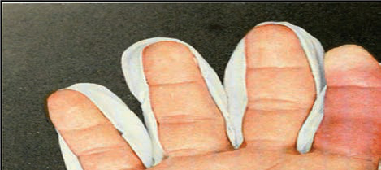<br>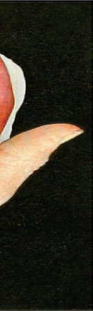<br><br><br><br><br><br><br>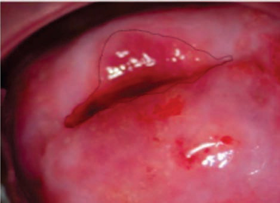<br>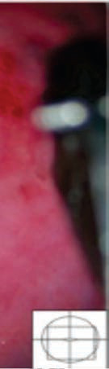<br>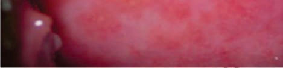<br><br><br><br><div class=''>a) ‚      </div><div class=''>b) †   </div><div class='correct'>c)    </div><div class=''>d)  -      </div><p><i> ê                         -    ...</i></p></div><div class='q'><p><b>Q14:</b>  Š         . ê                      ?  ”                .                 ‘      ?   ‹-  -          è  ,   ,   .                    . Å   è         ? 58  „ ç‰--               ,  ,      .           .              ? 74 Answer Key Question No. Correct Option Detailed Explanations                   .          ƒ               ?  ƒ          . Answer Key Question No. Correct Option Detailed Explanations   ‘ê--                   , ,     ,    . “                   .            ?                           .                    .          ƒ            ‚   ‰‘ / ;     ‰Š’’’/…;   -    ‰“’ / .              ?    -       …              ‚ . ‘       -          ‚      .          ‚    ? 195                           .                ? Answer Key Question No. Correct Option Detailed Explanations 211                             .                Š’            .                      ?        ç          . ‚                    ?  ƒˆ--        Ž   ’   .           .        ’     ?   çè--                       ‰‘            .                     .                    ?                  ?  ƒ          -          ˜          ? 320  –      ˆ ˆ       ˆ _______. 340   ƒ  ƒ      Š        , ,   “  ?  ‘              .       ?        — ç      ƒ     .                  ?                    ?                …  ? 436   -     Ž       Å‚ƒ              „    . Å   ,           .                   .        ˆ    „   ?  478 ’“- -   -Ž‡ -‚”      Åç, -     Å   . Ž ‰ ,  Åç               . è      Å           Å .              ? Answer Key Question No. Correct Option 479 Detailed Explanations                ,   ,           . „             ƒ    .           ?                 ?      : Answer Key Question No. Correct Option Detailed Explanations  Å       ‚   . 560            -      ?             ‡   ? </p><br><br><br><br><br><br><br><br><br><br><br><br><br><br><br><br><div class=''>a) ç  </div><div class='correct'>b) ‡ ƒ</div><div class=''>c) ƒ</div><div class=''>d) Š </div><p><i> ê        è         . ê        : è.      ...</i></p></div><div class='q'><p><b>Q15:</b>  ê                  -       .                    ? 10            ,            ?  „      ˜   ______.  100  —˜--     -  ƒ,      .    ,    ,         .   ™-          .           ƒ  ?  „             ,           ,                                 .                ? 151  „                      -             .     Ž        ‚    ‚   .             ?                 ? 223  241         –            . ‚               ? Answer Key Question No. Correct Option Detailed Explanations                 ,          .        †      -    ;          .                ? 267             ?  ’                ,    .                      ? 304   †        ,    ,             . ƒ                 ?        ˆ     ˆ ˆ   ? Answer Key Question No. Correct Option 341 Detailed Explanations  ê  ƒ Š      ƒ   :                     . Ž  ƒ      ƒ      Œ    .              ?   ‹Š- -            ,   ,   .                …. „       ‚š,      .              .     ? 404   •‡- -                 . „             Š . „  '   Š   Å Š        .      Š    ?  †                          -              ? 453        Š            ,   ,    ‹ ƒ. ˆ         ‹   ƒ          .                          ?   -        †–             . † …  ,                      .          ? 512              ‚      ?   ””--                     . ‡ è  ,      -                  .     è           ? 582  Å             : 606 Answer Key Question No. Correct Option 607 Detailed Explanations </p><br><br><br><br><div class=''>a) Ž‹‚‡</div><div class='correct'>b) ‹   </div><div class=''>c) ‹  </div><div class=''>d)  </div><p><i> ê     … ‰    . ‰          … ‰    . … ‰      ...</i></p></div></div></body></html>